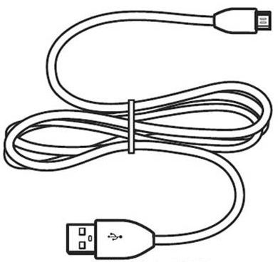
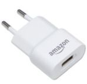
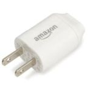

Masz przed sobą instrukcję użytkownika e-czytnika Kindle Keyboard. Producent czytników Kindle, firma Amazon, niestety nie dostarczyła polskim użytkownikom instrukcji w ich rodzimym języku. Ta instrukcja powstała z inicjatywy strony poświęconej tematyce czytników tej firmy - eKundelek.pl, by pomóc Polakom lepiej poznać ten obecnie najpopularniejszy model e-czytnika na rynku.
Zanim przejdziemy do części właściwej instrukcji, pierwszą rzeczą jaką powinieneś wiedzieć o Kindle jest to, jak należy go ładować, gdy bateria jest już słaba.
Ikona mówiąca o tym w jakim stanie jest bateria, znajduje się w prawym górnym rogu ekranu. 4 podstawowe ikonki symbolizują stan naładowania baterii odpowiednio w 100%, 75%, 50%, 25%
Jeżeli bateria jest na wyczerpaniu, ikonka przybiera postać taką jak poniżej:
W takim przypadku powinieneś podłączyć Kindla do prądu z pomocą kabla w standardzie micro USB, połączonego z adapterem umożliwiającym wpięcie go do standardu gniazdek stosowanych w Europie
Niestety, Amazon w standardowej paczce dołącza wtyczkę w standardzie Amerykańskim:
Oczywiście można zakupić wtyczkę oryginalną, prosto ze sklepu Amazon, jest jednak ona dość droga (koszt $14.99 + przesyłka). W praktyce, doskonale się sprawdzają adaptery, które obecnie dołączane są do większości nowych telefonów komórkowych. W ostateczności, możemy dokupić taki adapter już za kilka złotych w każdym sklepie komputerowym, sklepie internetowym, bądź serwisie aukcyjnym, wyszukując frazę "adapter sieciowy USB".
Gdy już rozpocznie się ładowanie, ikonka przybierze następującą postać:
Kindla można też ładować korzystając z kabla USB podłączonego bezpośrednio do komputera. Wówczas jednak Kindle automatycznie zamontuje się też w systemie operacyjnym jako nowe urządzenie zewnętrzne (podobnie jak robią to urządzenia typu Pendrive), jednocześnie blakując możliwość korzystania z Kindla. By ładować urządzenie z pomocą komputera i jednocześnie móc korzystać z Kindla, należy w systemie operacyjnym "odmontować bezpiecznie urządzenie", co w przypadku systemu Windows robi się z pomocą zasobnika systemowego.
Gdy urządznie naładuje się całkowicie, dioda znajdująca się na spodzie urządzenia, która podczas ładowania świeci się na pomarańczowo zmieni barwę na kolor zielony.